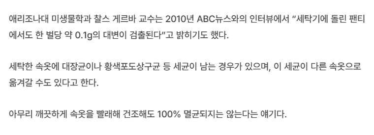

사실 속옷 뿐만 아니라 각종 식기, 침구류, 수건 등등 생활용품들 권장 교체주기 다 지키려면 고정비가 만만치 않음. 차량 엔진오일 교체하듯이 정확한 시기를 지켜가며 살면 돈은 돈대로 들고 매번 바꾸는 게 귀찮지.. 너무 빡빡하게 살 필욘 없잖아?
밴드 늘어난거같으면 바꾸면 된다
군대에서 준 팬티 아직도 입는데.. 벌써 11년됐네
팬티 불쌍해ㅠㅠ
군대 팬티 진짜편해
빨래할때 락스 넣으면됨
락스 넣으면 세탁기가 좆됨
스뎅도 부식엔 무적아님
미1친 새끼야 네 말 듣고 세탁기에 락스 넣었더니 옷 색이 이상해져버렸다
팬티는 버리는게 아니라 사라지는거다
저런걸로 아파서 죽을꺼였으면 10년도 못살고 죽었다 씨발롬들아.. 인간을 무균실에서 키우던가...
숙성아님?
지-랄
멍청한 애들 넘치네
0.1g가지고
바다도 똥물이겟네그럼 ㅋㅋ
똥꼬쪽 헐면 바꾸면됨
똥꾸멍에 있는 똥가루가 더 많겠다 으휴
일광소독하면 되는 거 아님?